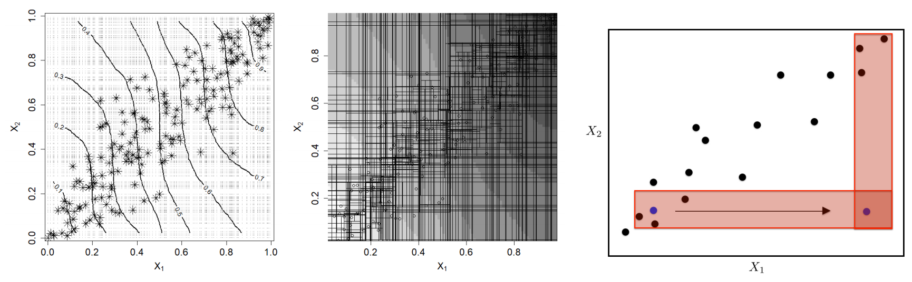
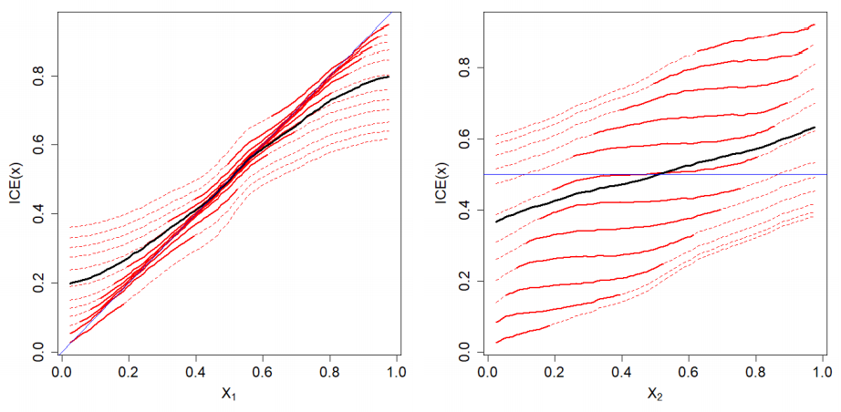
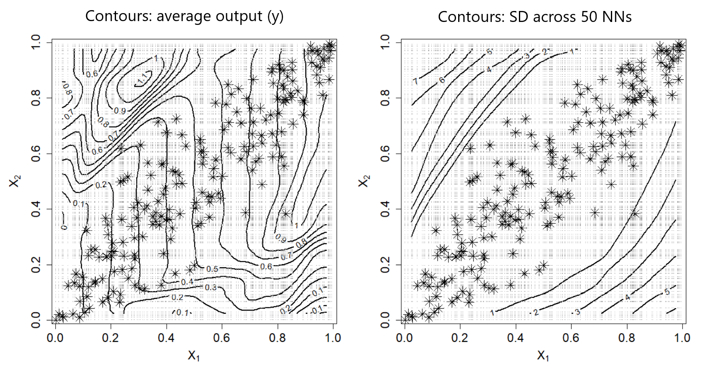
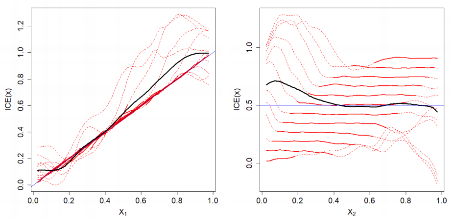
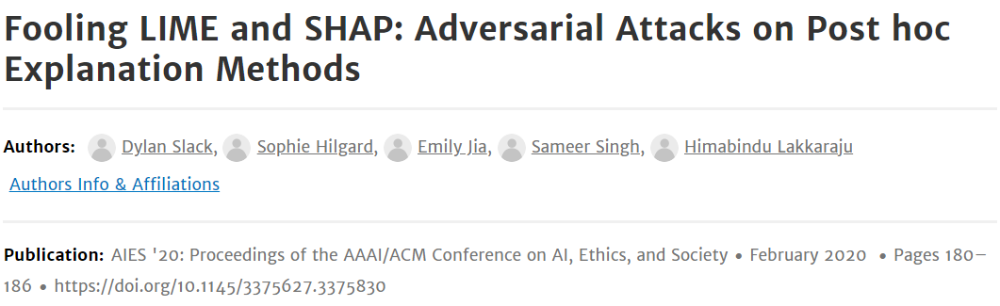
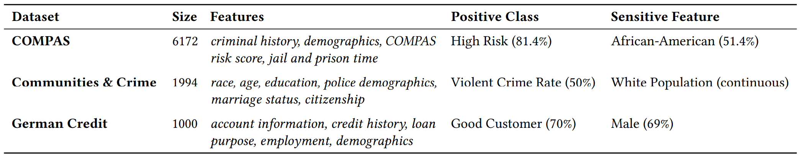
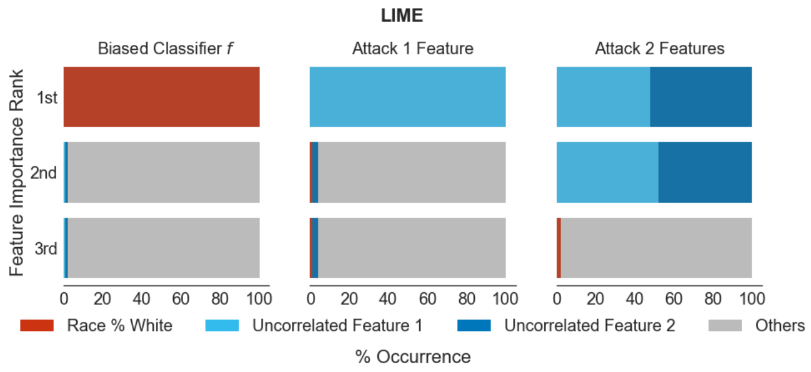
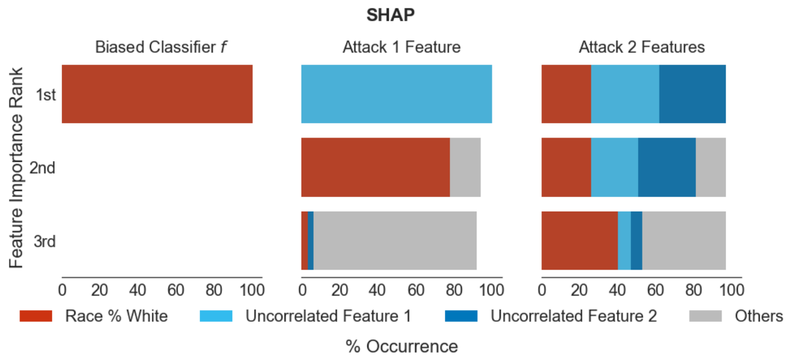
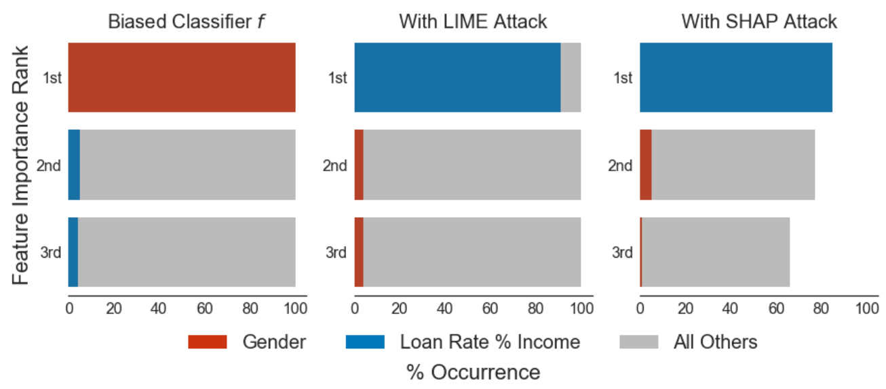

Here be dragons
Craven Group meeting
Yuriy Sverchkov
August 28, 2020
Please Stop Permuting Features: An Explanation and Alternatives
Giles Hooker and Lucas Mentch, 2019
When features in the training set exhibit statistical dependence, permutation methods can be highly misleading when applied to the original model.
\(\require{boldsymbol}\)
Feature importance
Given a model \(f : \mathcal X \rightarrow \mathcal Y\) where \(\mathcal X\) is made up of multiple features, quantify, for each feature \(j\), its contribution to the prediction.
Variable Importance
Breiman (2001)
- \(\color{Skyblue} X\) - feature matrix
- \(\color{Lavender} X^{\pi, j}\) - feature matrix with \(j\)-th feature (column) permuted
- \(\boldsymbol x_i\) - \(i\)-th instance (row)
\[VI_j^\pi = \sum_{i=1}^N {\color{Lavender} \underbrace{ L(y_i, f(\boldsymbol x_i^{\pi,j})) }_\text{Loss on permuted data}} - {\color{Skyblue} \underbrace{ L(y_i, f(\boldsymbol x_i)) }_\text{Loss on original data}}\]
Partial Dependence Plots
Friedman (2001)
- \(X^{x,j}\) - feature matrix with \(j\)-th feature set to \(x\) for all instances
\[PD_j(x) = \frac{1}{N} \sum_{i=1}^N f(\boldsymbol x_i^{x,j})\]
Individual Conditional Expectation
Goldstein et al. (2015)
\[ICE_{i,j}(x) = f(\boldsymbol x_i^{x,j})\]
Theorem 1.
For \(f(x) = \hat \beta_0 + \sum_{j=1}^p \hat \beta_j x_j\) fit by least squares
- \(E_\pi VI_j^\pi = 2\hat \beta^2_j \sum_{i=1}^n (x_{ij} - \bar x_j)^2 \propto \hat \beta_j^2 \mathrm{Var}(x_{j})\)
- \(PD_j(x) = C_j + \hat \beta_j x\) where \(C_j = \sum_{j' \neq j} \hat \beta_{j'} x_{ij'}\)
- \(ICE_{i,j}(x) = C_{i,j} + \hat \beta_j x\) where \(C_{i,j} = \sum_{j' \neq j} \hat \beta_{j'} x_{ij'}\)
Ground truth model
\[\begin{array}{r} y_i = x_{i1} + x_{i2} + x_{i3} + x_{i4} + x_{i5} + 0 x_{i6} + 0.5 x_{i7} \\ + 0.8 x_{i8} + 1.2 x_{i9} + 1.5 x_{i10} + \epsilon_i \end{array}\]
Expected feature importance ranking:
\[10 \succ 9 \succ 1 = 2 = 3 = 4 = 5 \succ 8 \succ 7 \succ 6\]
Ground truth model
\[\begin{array}{r} y_i = x_{i1} + x_{i2} + x_{i3} + x_{i4} + x_{i5} + 0 x_{i6} + 0.5 x_{i7} \\ + 0.8 x_{i8} + 1.2 x_{i9} + 1.5 x_{i10} + \epsilon_i \end{array}\]
- \(\epsilon_i \sim N(0, 0.1^2)\)
- \(x_{ij} \sim \textrm{Uniform}[0,1]\)
- \(x_{i1}, x_{i2}\) correlated by a Gaussian copula
Gaussian copula

Simulation results: Variable Importance

Features 1 and 2 are correctly ranked when they are uncorrelated, but are ranked higher by nonlinear models when correlated.
Simulation results: Partial Dependence Plots

Simulation results: Individual Conditional Expectation Plots

The dependence of \(f(\boldsymbol x)\) on \(x_1\) is well-behaved near the source data distribution, and fluctuates outside it.
A simpler example
\[y = x_1 + 0 x_2 + \epsilon\]
- \(\epsilon \sim N(0, 0.05)\)
- \(x_1, x_2\) linked by Gaussian copula with correlation 0.9
RF learned:

RF ICE+PDP

NN learned:

NN ICE+PDP

Lessons
- Dependence between input features concentrates data in a subset of the space spanned by permuted datasets
- Variable importance computed by a permutate-and-predict strategy depends on evaluating \(f(\boldsymbol x)\) out-of-distribution
- Out-of distribution predictions of complex models may be unpredictable
Variable importance alternatives
- Permute/perturb conditionally (keeping the generated samples in-distribution)
- Remove and relearn
- Permute and relearn
- Condition and relearn

Exploiting out-of-distribution predictions

Setting
An adversary wants to deploy a (colloquially) biased classifier \(f\) for making critical decisions (e.g. parole, bail, credit)
The adversary will provide their classifier as a black box
Customers and regulators will use explanation methods (e.g. LIME and SHAP) to determine if the black box is suitable to be deployed (check that it is not biased)
The adversary can succeed by constructing a classifier \(e\) that predicts like \(f\) (is biased) on real data, but LIME and SHAP won’t identify it as using protected features.
LIME and SHAP
Find an interpretable model \(\color{skyblue} g\) to explain the prediction of a black box \(\color{SeaGreen} f\) for an instance \(x\):
\[\mathop{\arg \min}_{\color{skyblue} g \in \mathcal G} {\color{Goldenrod} L}( {\color{SeaGreen} f}, {\color{skyblue} g}, {\color{Apricot} \pi_x}) + {\color{Lavender} \Omega}({\color{skyblue} g})\]
- \(\color{skyblue} \mathcal G\) - class of interpretable (linear) models
- \(\color{Lavender} \Omega\) - complexity of model
- \(\color{Goldenrod} L\) - fidelity loss
LIME and SHAP
- \(\color{Goldenrod} L\) - fidelity loss:
\[{\color{Goldenrod} L}( {\color{SeaGreen} f}, {\color{skyblue} g}, {\color{Apricot} \pi_x}) = \sum_{\color{Lavender} x' \in X'} \left( {\color{SeaGreen} f}({\color{Lavender} x'}) - {\color{SkyBlue} g}({\color{Lavender} x'}) \right)^2 {\color{Apricot} \pi_x({\color{Lavender} x'})}\]
- \({\color{Apricot} \pi_x}\) - proximity to \(x\)
- \(\color{Lavender} X'\) - synthetic points making up the neighborhood of \(x\)
Adversarial black box
\[e(x) = {\color{SeaGreen} f(x)}{\color{SkyBlue}\delta(x)} + {\color{Goldenrod} \psi(x)}{\color{SkyBlue}(1-\delta(x))} = \begin{cases} \color{SeaGreen} f(x) & \color{SeaGreen} \text{if } x \in \mathcal X_\mathrm{dist} \\ \color{Goldenrod} \psi(x) & \color{Goldenrod} \text{otherwise} \end{cases}\]
- \({\color{SeaGreen} f}\) - biased classifier (uses sensitive features)
- \({\color{Goldenrod} \psi}\) - classifier uncorrelated with sensitive features
- \(\color{SkyBlue} \delta\) - out-of-distribution classifier

Experiments: datasets

Experiments: COMPAS

Experiments: COMPAS

Experiments: Communities & Crime

Experiments: Communities & Crime

Experiments: German Credit
